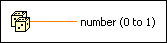

Random Number (0-1) Function
Owning Palette: Numeric VIs and Functions
Requires: Base Development System
Produces a double-precision, floating-point number between 0 and 1. The number generated is greater than or equal to 0, but less than 1. The distribution is uniform.
Alternatively, you can use several of the Signal Generation VIs or the Signal Generation PtByPt VIs to regenerate the same random sequence. For example, the Uniform White Noise VI allows you to set a seed number that you can use to initialize the generation of a pseudorandom pattern.

 Add to the block diagram Add to the block diagram |
 Find on the palette Find on the palette |